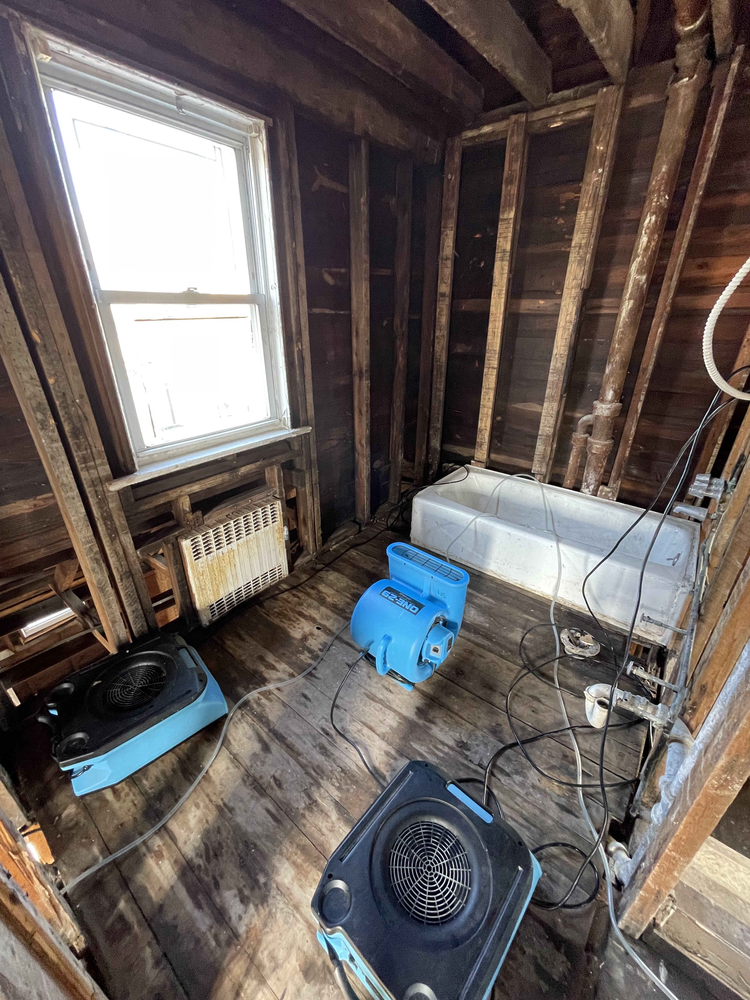
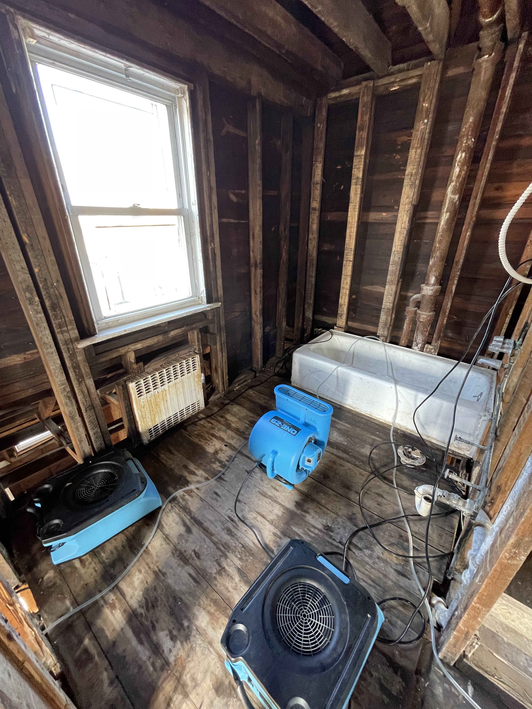
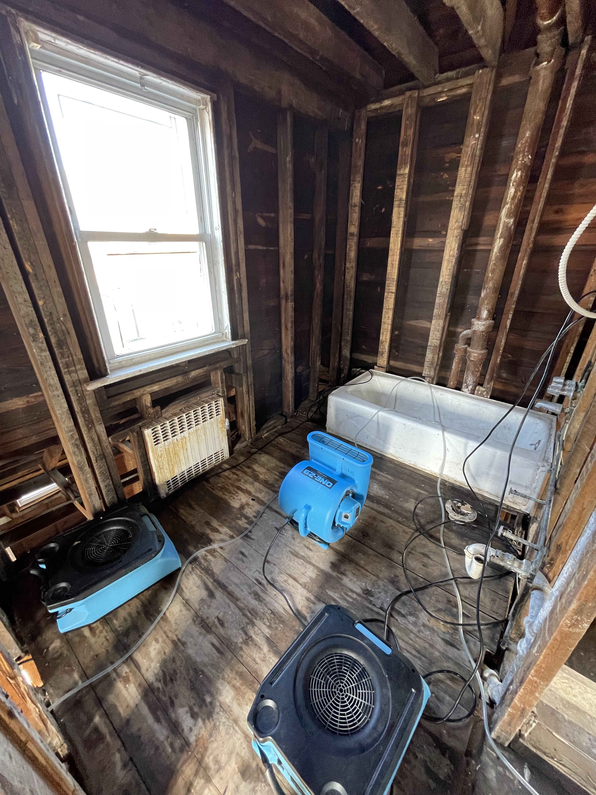

View Our Work

 


HomeDoc Restoration provides Long Island, NY with immediate responses,
24/7 free assessments,
and a team of IICRC certified professionals.
Call us today!
Whether it's your home or your business, HomeDoc's certified professionals have the experience and know how to deal with any type of water damage you encounter. Our responsive technicians work fast to ensure no further damage occurs, using top of the line equipment and cleaning methods to get you or your business back on track.
We understand a fire can be devastating for anyone. It is important to acknowledge that each fire loss is unique and the cleaning approach should also be unique. Improper cleaning techniques could lead to more severe damage. At HomeDoc we are IICRC trained and certified to provide the highest quality smoke/fire cleaning service. Don't leave it up to chance, leave it up to HomeDoc.
If your oil fired furnace has suffered a puff back, call HomeDoc Restoration at 516-584-3158 for immediate service. We can clean up the oily soot and have your furnace working again quickly. We specialize in fire and smoke damage cleanup and we’ve helped many families and businesses recover from puff backs in both Nassau and Suffolk County, NY.
Sewage backups are usually caused by blockages or clogs within drain pipes. To keep your family safe, get a professional sewage removal and cleanup service. Sewage is dangerous and not to mention disgusting. From strong odors to mold, bacteria, and parasites, you want to be sure to use a professional.
Mold is widespread and some types are harmful to health. It spreads through airborne spores, growing on wet surfaces and releasing more spores. Moisture is necessary for mold growth. Early removal may be possible by homeowners, but professional inspection is advised, especially for immune-compromised individuals. Complete sterilization is challenging due to mold's resilience, but resolving moisture prevents growth.
HomeDoc Restoration will help you navigate through your insurance claim to help give you the peace of mind knowing that our team of professionals are working day and night to help you get back to enjoying your home.

What our customer's have to say
"Awesome experience with HomeDoc Restoration, they work quickly and are very knowledgeable and helped my house get back to normal. Great to know that I have a company that has my back at the times I need them."
"I came home to my basement filled with water and my belongings ruined. Joe and his team came within the hour and got to work. Great guys to work with. They saved my house and helped me throughout the whole process, I would recommend them to everyone."
"What a huge help Joe was!! I had a pipe burst in my basement and within 2 hours Joe was here helping me not only to fix the broken pipe but also cleaning, drying, and billing my insurance instead of me! Highly recommend this restoration company."